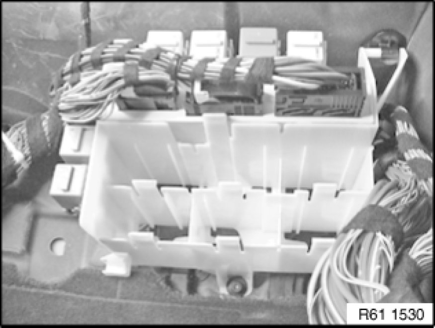

Removing and Installing/Replacing Relay/Module (In Instrument Panel at Bottom Right)
61 31 470 - Removing and installing/replacing relay/module (in instrument panel at bottom right)

Necessary preliminary tasks:
- Remove luggage compartment floor trim panel 51 47 101 Removing and Installing/Replacing Luggage Compartment Floor Trim Panel
- Disconnect battery negative lead Disconnecting and Connecting Battery Negative Lead
- Remove right glovebox with housing 51 16 366 Removing and Installing Right Glovebox With Housing

Detach relay.